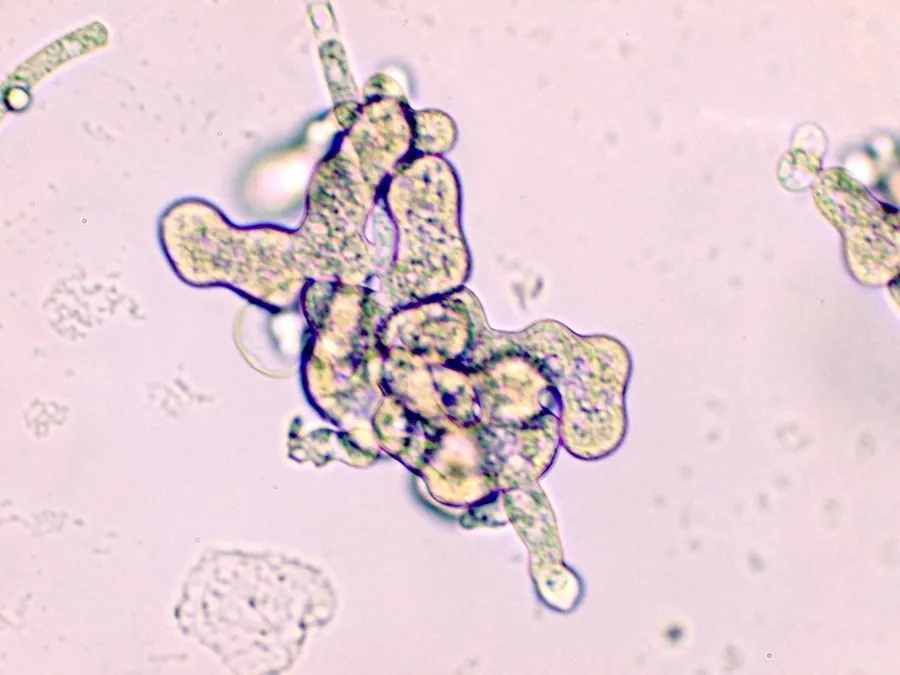

真菌 · 真菌界
瓜果腐霉 Pythium aphanidermatum

瓜果腐霉是引起幼苗猝倒和瓜果腐烂的病原卵菌，菌丝无隔、产生游动孢子，在高温高湿的苗床和菜地中危害严重。
- 分类
- 门卵菌门纲卵菌纲目腐霉目科腐霉科属腐霉属
- 栖息环境
- 苗床、菜地土壤与灌溉水中，高温高湿时流行
- 地理分布
- 世界性分布，中国各地蔬菜产区和苗床均有发生
- 保护级别
- 暂无评估（IUCN 未评估，植物病原卵菌）
物种志
瓜果腐霉属于卵菌门腐霉科，不是真正的真菌，但形态和生活方式与真菌相似，传统上放在真菌中研究。它的菌丝无隔膜、白色棉絮状，生长迅速；孢子囊呈膨大的丝状或瓣状，顶端产生泡囊，囊内形成肾形的游动孢子，游动孢子有两根鞭毛，可在水中游动寻找寄主；有性阶段形成厚壁的卵孢子，可在土壤中存活多年。
瓜果腐霉是重要的植物病原菌，寄主范围很广，包括黄瓜、西瓜、番茄、辣椒、白菜等多种蔬菜和瓜类。它侵染幼苗基部，引起猝倒病，造成成片死苗；也能侵染果实，引起水渍状腐烂。病害在高温高湿、排水不良的苗床和菜地中流行最快。防治上主要靠苗床通风降湿、合理浇水、轮作和使用抗病品种，必要时用杀菌剂灌根；由于卵菌与真菌亲缘关系远，许多抗真菌药剂对它无效，需选用专门的卵菌药剂。
形态与习性
- 分类卵菌门，并非真正的真菌
- 菌丝无隔膜，白色棉絮状
- 游动孢子肾形，有两根鞭毛，可在水中游动
- 越冬厚壁卵孢子可在土壤中存活多年
- 病害幼苗猝倒病与瓜果腐烂
- 寄主黄瓜、西瓜、番茄、辣椒等
- 防控降湿、轮作与专用卵菌药剂
趣味知识
- 瓜果腐霉属于卵菌，不是真正的真菌，亲缘上更接近藻类。
- 它的游动孢子有两根鞭毛，能在水里游动寻找植物根部。
- 猝倒病会让幼苗突然倒伏死亡，常成片发生。
- 许多抗真菌药剂对卵菌无效，防治要选专用药。